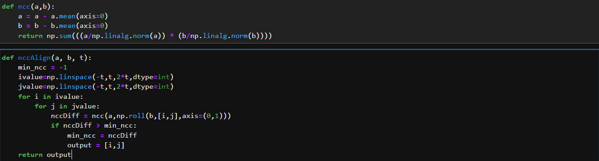

Sergei Mikhailovich Prokudin-Gorskii (1863-1944), a Russian chemist and photographer, is considered as a pioneer in color photography. With Tsar’s special permission and funding, he traveled across the Russian Empire, and took color photographs of people, daily life, buildings, landscapes, etc., documenting the early 20th-century Russia. He produced these color photographs by using a simple but ingenious idea: recording three exposures of every scene onto a glass plate using a blue, a green, and a red filter. These negative plates is now in possession by the Library of Congress of U.S.A., and have been recently digitized.
For this project, we are supposed to, given an input of 3 grayscale images representing the intensity of each color channel in a RGB space, recreate a colored images. This idea was envisioned by Sergei Mikhailovich Prokudin-Gorskii around 1907. The pictures were taken with filters (glass plates) for each of the color channels, which enabled posterior aligning.
First, we must divide the input image into three equals part.Then align the second and the third parts (G and R channels) to the first one (B channel).
Normalized Cross-Correlation (NCC) is by definition the inverse Fourier transform of the convolution of the Fourier transform of two (in this case) images, normalized using the local sums and sigmas (see below). There are several ways of understanding this further, a very simple example is that this normalized cross-correlation is not unlike a dot product where the result is the equivalent to the cosine of the angle between the two normalized pixel intensity vectors. In addition to this, the normalized cross-correlation used here is essentially a Pearson product moment correlation, where the expected value of the convolution of the data sets is defined as the inverse Fourier transform of the convolution of the two Fourier transforms (The equation below for nXcorr should now look more familiar). This type of correlation is a very standard statistical analysis tool to ascertain the agreement between two data sets, and Fourier transforms are used here purely for convenience and speed. The direct dot product or pure convolution could likewise be used, but these are much slower.
Here is my ncc code:
In my code, I cropped images manualy.
I use sharpnes and brightness functions.
I couldn't get better results for some images :
As seen in the 8 pictures above, the program I wrote cannot properly align some images.
The reasons for this may be one or more of the following: 1-The "t" parameter I gave in the ncc algorithm is small 2-Some of the pictures I receive as input are bad 3-I did not implement any edge detection in my code